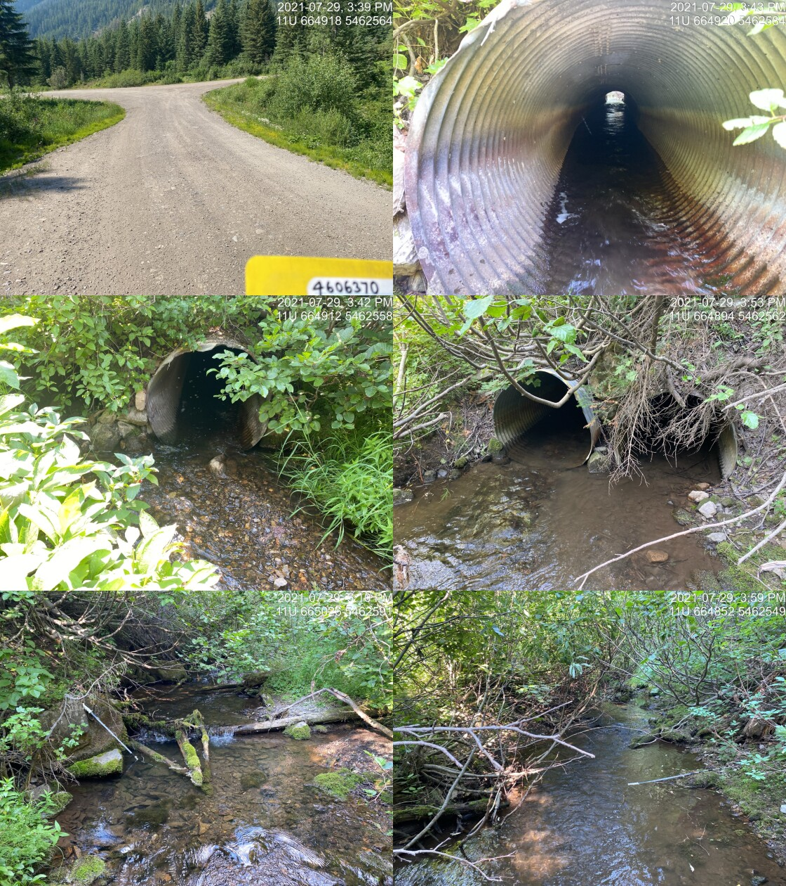

Appendix - 197787 & 197786 - Lodgepole Creek
Site Location
PSCIS crossing 197787 is located on Lodgepole Creek on the Harvey FSR approximately 35km south-east of Fernie, BC and accessed from the Lodgepole FSR. PSCIS crossing 197786 is located approximately 875 upstream of 197787 and is also on the Harvey FSR. The Harvey FSR (forest file ID 5466) is under the jurisdiction of the Ministry of Forests, Lands, Natural Resource Operations and Rural Development District Manager for the Rocky Mountain Forest District (FLNRORD 2020d).
Background
Lodgepole Creek drains in a generally western direction to the confluence with the Wigwam River before flowing 10km to the Elk River at a location approximately 7km downstream of the Elko Dam. At crossing 197787, Lodgepole Creek is a third order stream with a watershed area upstream of the crossing of approximately 5.2km2. The elevation of the watershed ranges from a maximum of 2456m to 1592m near PSCIS crossing 197787 (Table 5.13). Lodgepole Creek is known to contain westslope cutthroat trout upstream of the subject culvert (MoE 2020a; Norris 2020). The only stream crossing upstream of 197787 on the mainstem of the stream before extreme gradients is crossing 197786. Lodgepole Lake is located approximately 300m upstream of 197787 and is approximately 2ha in area.
fpr_tab_wshd_sum(site_id = my_site) %>%
my_kable(caption_text = paste0('Summary of derived upstream watershed statistics for PSCIS crossing ', my_site, '.'),
footnote_text = 'Elev P60 = Elevation at which 60% of the watershed area is above')| Site | Area Km | Elev Site | Elev Min | Elev Max | Elev Mean | Elev Median | Elev P60 |
|---|---|---|---|---|---|---|---|
| 197787 | 5.2 | 1664 | 1592 | 2456 | 1936 | 1920 | 1883 |
| * Elev P60 = Elevation at which 60% of the watershed area is above |
Due to the potential for significant quantities of upstream habitat suitable for WCT rearing and spawning based on bcfishpass outputs, the Canadian Wildlife Federation assigned these sites as high priorities for follow up. Table 5.14 presents preliminary fish passage modelling data for crossing 197787 with linear length of spawning and rearing habitat estimated for westslope cutthrout trout at 0.5km and 0.6km respectively. A map of the watershed is provided in map attachment 082G.109.
print_tab_summary_bcfp()| Habitat | Potential | Remediation Gain | Remediation Gain (%) |
|---|---|---|---|
| WCT Spawning (km) | 0.8 | 0.5 | 62 |
| WCT Rearing (km) | 1.1 | 0.6 | 55 |
| WCT Stream (km) | 1.6 | 1.0 | 62 |
| WCT Network (km) | 2.1 | 1.5 | 71 |
| WCT Lake Reservoir (ha) | – | 0.0 | – |
| WCT Wetland (ha) | 1.9 | 1.9 | 100 |
| WCT Slopeclass03 Waterbodies (km) | 0.5 | 0.0 | 0 |
| WCT Slopeclass03 (km) | 0.2 | 0.2 | 100 |
| WCT Slopeclass05 (km) | 0.6 | 0.3 | 50 |
| WCT Slopeclass08 (km) | 0.4 | 0.1 | 25 |
| WCT Slopeclass15 (km) | 0.4 | 0.4 | 100 |
| WCT Slopeclass22 (km) | 0.0 | 0.0 | – |
| WCT Slopeclass30 (km) | 0.0 | 0.0 | – |
| * Model data is preliminary and subject to adjustments. | |||
| † Modelled rearing habitat estimates do not currently include linear lengths of centrelines within lakes and wetlands. |
Stream Characteristics at Crossings
At the time of the survey, the PSCIS crossing 197787 was un-embedded, non-backwatered and considered a potential barrier to upstream fish passage according to the provincial metric. The pipes were 2m each in diameter with lengths of 18m, culvert slopes of 0.5%, a stream width ratio of 1.6 and an outlet drop of 0m (Table 5.15). Water temperature was 7\(^\circ\)C, pH was 7.6 and conductivity was 261uS/cm.
my_pscis_info_out %>% pull(assessment_comment)PSCIS crossing 197786 was comprised of two pipes. As per the provincial methodology, because the outlet height of each of the two 1m pipes were equivalent, the diameters of the two pipes were summed for input into PSCIS and the the stream width ratio was calculated as though the structure diameter was 2m (MoE 2011b). The crossing was non-embedded, not backwatered and considered a potential barrier to upstream fish passage according to the provincial metric. The pipe lengths were 18m, with pipe slopes measured at 0.5%. The stream width ratio was 1.6 and the outlet drop was 0m (Table ??).
##this is useful to get some comments for the report
hab_site %>% filter(site == my_site2 & location == 'us') %>% pull(comments)
my_priority <- my_priority_info()Stream Characteristics Downstream of 197787
The stream was surveyed downstream from 197787 for 285m (Figures 5.15 - 5.16). Overall, total cover amount was rated as moderate with deep pools dominant. Cover was also present as small woody debris, large woody debris, boulders, undercut banks, and overhanging vegetation (Table 5.16). The average channel width was 4.4m, the average wetted width was 3.2m and the average gradient was 6.2%. The dominant substrate was boulders with gravels subdominant. Habitat value was rated as medium as it was considered an important migration corridor with moderate value habitat for fry/juvenile salmonid rearing.
A 10m high falls was reported as present within the Provincial Obstacles to Fish Passage spatial spatial layer of the provincial Data Catalogue in the mainstem of Lodgepole Creek approximately 12.5km downstream of PSCIS crossing 197787 (MoE 2020d). The potential presence of this falls was considered relevant for assessment of PSCIS crossing 197787 so a 1100m section of stream was surveyed spanning the reported falls location (survey track is shown in map attachment 082G.109). No falls were observed within the area surveyed.
Stream Characteristics Upstream of 197787 and downstream of 197786
# as a note - we are using my_sit = my_site2 because the detailed info was recorded on that cardThe stream was surveyed upstream from 197787 for 315m to the outlet of Lodgepole Lake where a beaver dam ~1.2m in height was observed (Figures 5.17 - 5.20). Numerous fish (150 - 200m) were observed above the beaver dam. Within the area surveyed, total cover amount was rated as moderate with large woody debris dominant. Cover was also present as overhanging vegetation (Table 5.16). The average channel width was 3.3m, the average wetted width was 2.3m and the average gradient was 2.8%. Abundant gravels suitable for spawning were observed between the FSR and the lake outlet. Within this area of the survey the stream primarily had low complexity due to the prevalence of straight riffle type habitat. Some shallow pools and large woody debris were present. Habitat value was rated as high value due to the presence of spawning gravels as well as the lake which likely provides overwintering habitat for resident westslope cutthrout trout.
The stream was surveyed downstream from 197786 for 540m to the inlet of Lodgepole Lake (Figures 5.21 - 5.22). Within the area surveyed, total cover amount was rated as moderate with large woody debris dominant. Cover was also present as overhanging vegetation (Table 5.16). The average channel width was 3.3m, the average wetted width was 2.3m and the average gradient was 2.8%. Abundant gravels suitable for spawning were observed between the FSR and the lake outlet. The channel dewatered in a section from approximately 160m upstream of the lake to the lake. Substrate in the upstream, watered portion of the stream below the culvert was comprised of gravels suitable for spawning. Several deep pools potentialy suitable for overwintering westslope cutthroat trout were also observed in this section. Two steps 30cm high and 80cmhigh were observed in channel due to small woody debris accumulation. Habitat value was rated as high overall.
5.1 Stream Characteristics Upstream of 197786
The stream was surveyed upstream from 197786 for 580m to the base of a waterfall >30m high (Figures 5.23 - 5.24). Within the area surveyed, total cover amount was rated as moderate with small woody debris dominant. Cover was also present as large woody debris, boulders, undercut banks, deep pools, and overhanging vegetation (Table 5.16). The average channel width was 2m, the average wetted width was 1.8m and the average gradient was 3.8%.
Low gradient riffle-pool habitat containing abundant gravels suitable for resident westslope cutthrout trout spawning was present throughout the first approximate 300m of stream surveyed before gradients increased to 6-7% near the top of site. Shallow pools were present intermittently in the area surveyed, created by large woody debris. Habitat value was rated as medium value with moderate potential for salmonid spawning/rearing.
Structure Remediation and Cost Estimate
Structure replacement with a bridge (12m span) was recommended to provide access to the stream and lake habitat located upstream of PSCIS crossing 197787. The cost of the work was estimated at $240,000 for a cost benefit of 4.7 linear m/$1000 and 15.5m2/$1000.
Structure replacement with a bridge (12m span) was recommended to provide access to the habitat located upstream of PSCIS crossing 197786. The cost of the work was estimated at $240,000 for a cost benefit of 2.4 linear m/$1000 and 4.8m2/$1000.
Conclusion
There is 1.1km of habitat upstream of crossing 197787 to PSCIS crossing as.character(my_site2). Habitat in the area was surveyed was rated as high value for salmonid rearing/spawning primarily due to the presence of the 2ha of rearing habitat in Lodgepole Lake. The beaver dam upstream of the crossing may provide an obstacle to upstream passage for some migrating fish at some flows however they are not considered permanent, are likely important for maintaining water elevations in the lake and may be passable at some flows. There is 0.6km of habitat upstream of crossing 197786 before the impassable waterfall with habitat value rated as medium. Both crossings are on the Harvey FSR under the jurisdiction of the Ministry of Forests, Lands, Natural Resource Operations and Rural Development District Manager for the Rocky Mountain Forest District. Due to it’s status as a “potential” barrier to upstream migration, crossing 197787 was ranked as a moderate priority for proceeding to design for replacement. Crossing 197786 was ranked as a moderate priority for proceeding to design for replacement due to the streams seasonal disconnection from Lodgepole Lake and the relatively short section of habitat available upstream before the falls.
print_tab_summary()| Location and Stream Data |
|
Crossing Characteristics | – |
|---|---|---|---|
| Date | 2021-07-29 | Crossing Sub Type | Round Culvert |
| PSCIS ID | 197787 | Diameter (m) | 2 |
| External ID | – | Length (m) | 18 |
| Crew | AI TS | Embedded | No |
| UTM Zone | 11 | Depth Embedded (m) | – |
| Easting | 664905.1 | Resemble Channel | No |
| Northing | 5462562 | Backwatered | No |
| Stream | Lodgepole Creek | Percent Backwatered | – |
| Road | Harvey FSR | Fill Depth (m) | 1.5 |
| Road Tenure | FLNR DRM 5466 | Outlet Drop (m) | 0 |
| Channel Width (m) | 3.26 | Outlet Pool Depth (m) | 0.1 |
| Stream Slope (%) | 2.8 | Inlet Drop | Yes |
| Beaver Activity | Yes | Slope (%) | 0.5 |
| Habitat Value | Medium | Valley Fill | Deep Fill |
| Final score | 19 | Barrier Result | Potential |
| Fix type | Replace with New Open Bottom Structure | Fix Span / Diameter | 12 |
| Photos: From top left clockwise: Road/Site Card, Barrel, Outlet, Downstream, Upstream, Inlet. | |||
| Comments: Two pipes (1m each) but one blocked with debris. Because height of outlets equivalent widths were added together for input to stream width ratio. Large beaver dams upstream between culvert and Lodgepole Lake. 15:37 |
tab_hab_summary %>%
filter(Site == my_site2 |
Site == my_site ) %>%
# select(-Site) %>%
my_kable(caption_text = paste0('Summary of habitat details for PSCIS crossing ', my_site, ' and ', my_site2, '.'))| Site | Location | Length Surveyed (m) | Channel Width (m) | Wetted Width (m) | Pool Depth (m) | Gradient (%) | Total Cover | Habitat Value |
|---|---|---|---|---|---|---|---|---|
| 197786 | Upstream | 580 | 2.0 | 1.8 | 0.3 | 3.8 | moderate | medium |
| 197786 | Downstream | 540 | 1.4 | 0.8 | 0.4 | 1.8 | moderate | medium |
| 197787 | Downstream | 285 | 4.4 | 3.2 | 0.3 | 6.2 | moderate | medium |
| 197787 | Upstream | 315 | 3.3 | 2.3 | 0.3 | 2.8 | moderate | high |
print_tab_summary_bcfp(site = my_site2)| Habitat | Potential | Remediation Gain | Remediation Gain (%) |
|---|---|---|---|
| WCT Spawning (km) | 0.3 | 0.3 | 100 |
| WCT Rearing (km) | 0.5 | 0.5 | 100 |
| WCT Stream (km) | 0.6 | 0.6 | 100 |
| WCT Network (km) | 0.6 | 0.6 | 100 |
| WCT Lake Reservoir (ha) | 0.0 | 0.0 | – |
| WCT Wetland (ha) | 0.0 | 0.0 | – |
| WCT Slopeclass03 Waterbodies (km) | 0.0 | 0.0 | – |
| WCT Slopeclass03 (km) | 0.0 | 0.0 | – |
| WCT Slopeclass05 (km) | 0.3 | 0.3 | 100 |
| WCT Slopeclass08 (km) | 0.3 | 0.3 | 100 |
| WCT Slopeclass15 (km) | 0.0 | 0.0 | – |
| WCT Slopeclass22 (km) | 0.0 | 0.0 | – |
| WCT Slopeclass30 (km) | 0.0 | 0.0 | – |
| * Model data is preliminary and subject to adjustments. | |||
| † Modelled rearing habitat estimates do not currently include linear lengths of centrelines within lakes and wetlands. |
my_photo1 = pull_photo_by_str(str_to_pull = '_d1_')
my_caption1 = paste0('Typical habitat downstream of PSCIS crossing ', my_site, '.')grid::grid.raster(get_img(site = my_site, photo = my_photo1))
Figure 5.15: Typical habitat downstream of PSCIS crossing 197787.
my_photo2 = pull_photo_by_str(str_to_pull = '_d2_')
my_caption2 = paste0('Typical habitat downstream of PSCIS crossing ', my_site2, '.')grid::grid.raster(get_img(photo = my_photo2))
Figure 5.16: Typical habitat downstream of PSCIS crossing 197786.
##we could put 2 photos in on box but it is lots of extra work with the crossreferences. pdfs suck anyway. Don't get too custom with it!!!
# my_photo1 = pull_photo_by_str(str_to_pull = '_d1_')
# my_caption1 = paste0('Typical habitat downstream of PSCIS crossing ', my_site, '.')
#
# my_photo2 = pull_photo_by_str(str_to_pull = '_u1_')
# my_caption2 = paste0('Typical habitat upstream of PSCIS crossing ', my_site, '.')
my_caption <- paste0('Left: ', my_caption1, ' Right: ', my_caption2)
knitr::include_graphics(get_img_path(photo = my_photo1))
knitr::include_graphics("fig/pixel.png")
knitr::include_graphics(get_img_path(photo = my_photo2))my_photo1 = pull_photo_by_str(str_to_pull = '_u2_')
my_caption1 = paste0('Typical habitat upstream of PSCIS crossing ', my_site, '.')grid::grid.raster(get_img(photo = my_photo1))
Figure 5.17: Typical habitat upstream of PSCIS crossing 197787.
my_photo2 = pull_photo_by_str(str_to_pull = '_u1_')
my_caption2 = paste0('Gravels suitable for spawning located upstream of PSCIS crossing ', my_site, '.')grid::grid.raster(get_img(photo = my_photo2))
Figure 5.18: Gravels suitable for spawning located upstream of PSCIS crossing 197787.
my_caption <- paste0('Left: ', my_caption1, ' Right: ', my_caption2)
knitr::include_graphics(get_img_path(photo = my_photo1))
knitr::include_graphics("fig/pixel.png")
knitr::include_graphics(get_img_path(photo = my_photo2))my_photo1 = pull_photo_by_str(str_to_pull = '_u3_')
my_caption1 = paste0('Beaver dam located upstream of PSCIS crossing ', my_site, ' and just below Lodgepole Lake.')grid::grid.raster(get_img(photo = my_photo1))
Figure 5.19: Beaver dam located upstream of PSCIS crossing 197787 and just below Lodgepole Lake.
my_photo2 = pull_photo_by_str(str_to_pull = '_u4_')
my_caption2 = paste0('Lodgepole Lake located upstream of PSCIS crossing ', my_site, '.')grid::grid.raster(get_img(photo = my_photo2))
Figure 5.20: Lodgepole Lake located upstream of PSCIS crossing 197787.
my_caption <- paste0('Left: ', my_caption1, ' Right: ', my_caption2)
knitr::include_graphics(get_img_path(photo = my_photo1))
knitr::include_graphics("fig/pixel.png")
knitr::include_graphics(get_img_path(photo = my_photo2))my_photo1 = pull_photo_by_str(site_id = my_site2, str_to_pull = '_d1_')
my_caption1 = paste0('Habitat downstream of PSCIS crossing ', my_site2, '.')grid::grid.raster(get_img(site = my_site2, photo = my_photo1))
Figure 5.21: Habitat downstream of PSCIS crossing 197786.
my_photo2 = pull_photo_by_str(site_id = my_site2, str_to_pull = '_d2_')
my_caption2 = paste0('Dewatered habitat downstream of PSCIS crossing ', my_site2, '.')grid::grid.raster(get_img(site = my_site2, photo = my_photo2))
Figure 5.22: Dewatered habitat downstream of PSCIS crossing 197786.
my_caption <- paste0('Left: ', my_caption1, ' Right: ', my_caption2)
knitr::include_graphics(get_img_path(site = my_site2, photo = my_photo1))
knitr::include_graphics("fig/pixel.png")
knitr::include_graphics(get_img_path(site = my_site2, photo = my_photo2))my_photo1 = pull_photo_by_str(site_id = my_site2, str_to_pull = '_u1_')
my_caption1 = paste0('Typical habitat upstream of PSCIS crossing ', my_site2, '.')grid::grid.raster(get_img(site = my_site2, photo = my_photo1))
Figure 5.23: Typical habitat upstream of PSCIS crossing 197786.
my_photo2 = pull_photo_by_str(site_id = my_site2, str_to_pull = '_u2_')
my_caption2 = paste0('Large falls located ~550m upstream of PSCIS crossing ', my_site2, '.')grid::grid.raster(get_img(site = my_site2, photo = my_photo2))
Figure 5.24: Large falls located ~550m upstream of PSCIS crossing 197786.
my_caption <- paste0('Left: ', my_caption1, ' Right: ', my_caption2)
knitr::include_graphics(get_img_path(site = my_site2, photo = my_photo1))
knitr::include_graphics("fig/pixel.png")
knitr::include_graphics(get_img_path(site = my_site2, photo = my_photo2))knitr::opts_chunk$set(echo=FALSE, message=FALSE, warning=FALSE)
source('R/packages.R')
source('R/functions.R')
source('R/tables.R')my_site <- 197793